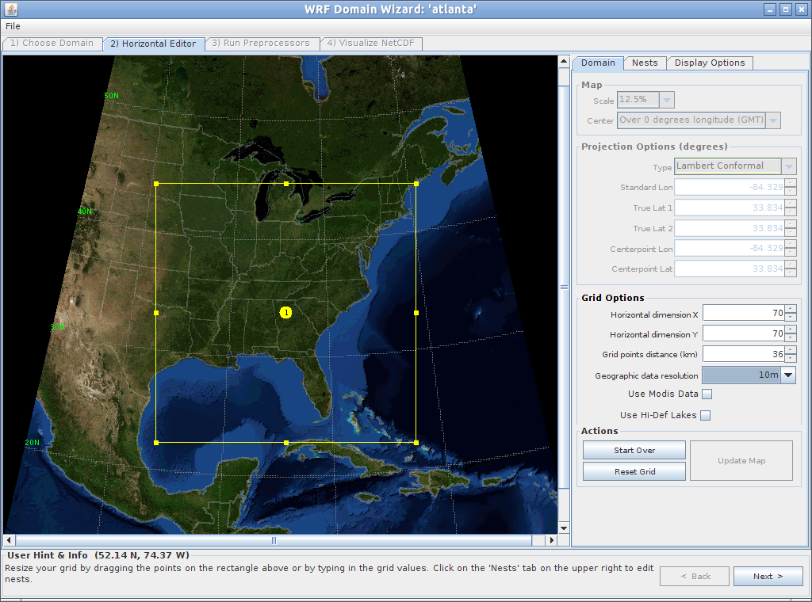

Generating site-specific meteorological data using mesoscale modelling
July 1, 2016
Please note that this guide has recently been revised based on the latest updates to UEMS (see UEMS version 15.58, the "Apples to Xerotic" release.). It is currently undergoing some extended alpha testing over the Canary Islands to support some research.
Introduction
This guide is a step-by-step procedure for the generation of hourly meteorological data at a desired geographical location through the setup, running and post-processing of a mesoscale weather numerical model.
To develop a mesoscale model-based methodology to provide estimated hourly climate/weather data for up to a 25-year period for a user-defined latitude/longitude point
To provide validation of the methodology over various terrain categories such as coast, mountain valley, mountain plateaus, and urban centers
This guide relies on a number of key requirements:
A working knowledge of a recent Linux operating system such as Ubuntu 14.04 or 16.04
A high performance computer workstation with about 8GB of RAM and 2TB of storage
Installing the software prerequisites
Patience!
Disclaimer
The software referred to in this procedure is under continuous development. It is expected that the instructions contained here are subject to change and relevant to WRF simulations circa 2016.
Neither Klimaat nor ASHRAE warrant that the information in this guide is free of errors. This information is provided as is without warranty of any kind, either expressed or implied. The entire risk as to the quality and performance of the program and data is with you. In no event will ASHRAE or the program developer be liable to you for any damages, including without limitation any lost profits, lost savings, or other incidental or consequential damages arising out of the use of or inability to use this information.
With all that out of the way, let's get the software installed.
Installation
In this section we describe the installation of the required software.
Installing Java
A recent version of the Java runtime environment, e.g. version 7, is required for some of the graphical applications such as Domain Wizard and Panoply. It is typically easily installed through a given Linux distribution's package manager. For example, on Debian-based systems (e.g. Ubuntu), it can be installed via
sudo apt-get install default-jre
Your mileage may vary.
Installing UEMS
The crucial element of this entire process is the STRC UEMS software package. UEMS contains all the functionality of the advanced mesoscale modelling software WRF, yet with a much simplified installation, configuration, and execution. It is maintained by the good people at UCAR, particularly Robert Rozumalski.
Clear and colourful instructions on how to install and use UEMS can be found at the UEMS website.
The four main steps are:
Registering in order to receive a Perl installation script uems_install.pl.
Running the script to install on your computer based on the instructions in the users guide, especially Chapter 2 (PDF).
For the impatient, this involves opening a terminal window and typing:
perl uems_install.pl --install
The main decision will be where to install (e.g. /home/jeeves/). Make sure you provide an absolute path, i.e. starting with /.
uems_install.pl will then proceed to download and install approximately 20GB, so ensure sufficient space is available in the chosen installation directory. The largest portion is reserved for world-wide static high-resolution (30 seconds of arc) data such as topography and land-use classes. Coffee time!
UEMS adds some code to your ~/.bash_profile which sets a few environment variables and adds the UEMS scripts to your path. Note that the commands in ~/.bash_profile are not executed until you are running a login terminal. Most new terminals opened on the desktop are not in fact login terminals. Thus, I find it more useful to move the relevant lines into ~/.bashrc, which is typically always executed. The relevant lines in ~/.bash_profile resemble:
if [ -f /home/jeeves/uems/etc/EMS.profile ] ; then
source /home/jeeves/uems/etc/EMS.profile
fi
Move them over to ~/.bashrc and open a new terminal which should activate your environment variables. You can confirm proper configuration by typing the following at the command line:
echo $EMS
This should result in something like:
/home/jeeves/uems
Your mileage may vary.
Confirming installation by running a benchmark simulation. Full instructions can be found in Appendix B (PDF). The steps are essentially
cd $EMS_UTIL/benchmark/27april2011
ems_prep --benchmark --domain 2
ems_run --domain 2
ems_prep will setup the benchmark simulation, indicating success with something like "Your awesome EMS Prep party is complete". ems_run will run the benchmark, taking a few hours to do so.
Installing Panoply (Optional)
Panoply is a Java-based application that plots geo-gridded and other arrays from netCDF, HDF, GRIB, and other datasets. GRIB is the file format of input files to WRF while netCDF is the file format for WRF output files.
An older version of Panoply ships with UEMS and is used by Domain Wizard when viewing your domains. However, the new Panoply has a number of features that make it worthwhile to download separately. Instructions can be found here.
To be able to run Panoply from anywhere, add an alias in your ~/.bashrc:
alias panoply=/path/to/PanoplyJ/panoply.sh
Open a new terminal and type panoply to test your installation. If successful, you should be able to load the files from your benchmark run.
For the output WRF netCDF files generated, Open one of the files located in $EMS_UTIL/benchmark/27april2011/wrfprd. Note that you will not see any files listed until you list files of type All Files. Unfortunately, WRF generates files with an empty extension, without the expected netCDF .nc extension. Select one of the available Datasets (e.g. T2), click Create Plot, click Create to accept the default plot type, and you should see something like:
Benchmark Drybulb Temperature @ 2m (Kelvin)
The postage-stamp-size rectangle in the above image represents the largest domain (d01) that was solved in the benchmark simulation. You can adjust map properties and projection to zoom into the domain.
Installing git (Optional)
git is a distributed version control system. Installing git will allow you to both download or clone the source code from github for some of the packages below, plus allow you to keep them up to date. or fork the source code if you want to make personal changes.
If you do not have it installed, use your favourite Linux package installation method. e.g. on Debian (Ubuntu) systems:
sudo apt-get install git
We mark this installation as optional as for every repository on github, there is an option to kick it ol' school by downloading a ZIP file containing the source.
Installing netcdf
In order to read the WRF data files, we need to install the netcdf4-python package. You have two paths:
Short: On recent distributions (e.g. Ubuntu 16.04), this is as simple as:
sudo apt-get install python-netcdf4
If that is successful, your netcdf installation is complete.
Long: Unfortunately, on earlier distributions (e.g. Ubuntu 14.04), you will need to compile this yourself.
python-netcdf4 itself has a number of prerequisites: we need to install numpy, cython, netcdf4, and hdf5:
numpy: This is a Python package offering many of the features and delights of Matlab®
cython: This is a C-compiler for Python to make things go fast, fast, fast
libnetcdf4-dev: This provides the API library to read and write the NetCDF files used to store WRF data
libhdf5-dev: This provides the compression algorithms used in newer NetCDF files.
To install these packages, on recent Debian-based systems
or grab the source code by clicking on Download ZIP after clicking on Clone or download at the github repository and unzipping into a suitable directory.
Then installation is via
cd netcdf4-python
python setup.py build
sudo python setup.py install
The big benefit of using git: when the package is updated, you can simply go to the directory and pull all the changes
As a bonus, python-netcdf4 provides a script called nc3tonc4 which will compress existing WRF output files by about a third.
Installing emspy
UEMS vastly simplifies WRF modelling. We take this one (baby) step further by providing Python code to aide in the splitting up of large simulations in multiple chunks, and the subsequent collation or dechunking of the results into a coherent time series.
This software, called emspy, is hosted on github repository. This repository allows us to respond as new versions of UEMS are released (and to fix the resulting many bugs).
empsy has been simplifed into just two executable Python scripts. You have two ways to operate:
Copy the files to the directory in which you plan to run the simulations. This would be useful if you plan on customizing some of the default options; or,
Point your PATH at the directory where you downloaded/git'd emspy. That is, add the following to your ~/.bashrc
export PATH=$PATH:/directory/where/emspy/exists
emspy is now ready to use. Test installation by typing
ems_chunk.py -h
Which should return the usage and command-line switches for ems_chunk.py.
Warning: This code was written by engineers not professional coders. It is likely to be brimming with bugs. As emspy evolves, it can be updated via
cd /directory/where/emspy/exists
git pull
We also encourage you to peruse and modify the code as you see fit. Suggestions are welcome.
Congratulations, you are done installing the software. Now let's talk about Data.
Data
Your WRF model must be coupled with the output of another three-dimensional model dataset, one with greater area coverage:
The larger model is interpolated to your smaller regional model and serves as the initial state of your atmosphere: the initial conditions.
The larger model also provides the air masses that enter your domain along the lateral boundaries as the simulation evolves: the boundary conditions.
The larger model also constrains the coarsest domain of the model to remain within the right ballpark: nudging.
For historical simulations, there are a number of re-analysis datasets which are large scale weather models which have assimilated observations and dynamically interpolated observations to a regular grid. Two we recommend and that are pre-configured for use with WRF-EMS are:
NARR: The North American Regional Reanalysis provides historical data from 1979 to present over North America, including Hawaii, Central America, and most of the Caribbean. This data is at a nominal resolution of 32 km and is available every three hours.
CFSR: The Climate Forecast System Reanalysis provides historical data from 1979 to present over the entire globe. This data is at a resolution of 0.5°×0.5° or approximately 55km and is available every six hours.
NARR Dewpoint
CFSR Dewpoint
Other datasets are possible, including MERRA or ECWMF. While ECWMF is available, MERRA is not currently configured for UEMS.
Tiling Your Data
UEMS will automatically download files as needed. However, these datasets are enormous: e.g. a single year of NARR or CFSR requires approximately 50GB. This, even after the extraneous variables were culled by the good people at UCAR.
UEMS thus provides an attractive option: the so-called personal tile method. In this method only a small subset (tile) of data is downloaded, i.e. bounded by the extents of your largest domain and only the variables needed, resulting in files that are 1% of the size. These datasets will be referred to as narrpt and cfsrpt.
Okay, let's start setting up your simulation.
Setup
Tweaking Your Working Directory (Optional)
By default, all your run files are stored in a directory pointed to by the environment variable $EMS_RUN. This will be setup by default to a runs directory under the main UEMS installation directory. However, you may want to point this environment variable to another location, perhaps where you have a large network drive. To do this, you will need to add a line below to where you modified the ~/.bashrc script previously
export EMS_RUN=/path/to/another/folder
Establishing Your Domain
The first step in getting a simulation setup is establishing a series of grids of increasing resolution and decreasing size centered on your chosen latitude/longitude and then interpolating static quantities such as topography, monthly vegetation, and land-use. This is all accomplished through a graphical tool called Domain Wizard.
First start the Domain Wizard:
dwiz &
You will be presented with a window dialog. Click Continue to Create New Domain
Create New Domain
Enter a domain Name and Description. The Name will be used as a directory name so keep it simple (e.g. atlanta or new_york). Use _ as a space. Click Continue.
Name and Description
Drag a rectangle, centered around your location, approximately 30°×30°. Size doesn't matter as we will be adjusting it in the next steps.
Under Projection Options, Type will be now be highlighted. Select Lambert Conformal.
Enter the longitude and latitude of your desired center point under Centerpoint Lon and Centerpoint Lat, respectively. At this point you should see something like this:
Selecting Parent Domain
Click Update Map and then enter:
Horizontal Dimension X: 70
Horizontal Dimension Y: 70
Grid points distance (km): 36
Geographic data resolution: 10m
This will establish a 70×70 or a 2520km×2520km parent domain.

Tweaking Parent Domain
At this point you can configure your nested domains, d02, d03, etc.
Click the Nests tab and click New. Leave all the Nest Properties at their default settings but enter the following under Nest Coordinates:
(LLI) Left: 24
(URI) Right: 47
(URJ) Top: 47
(LLJ) Bottom: 24
Configuring Domain d02
This establishes where in the parent, d01, the new nested domain, d02, sits.
Click OK:
Domain d01 and d02
The above configuration centers d02 within d01, has the same cell dimension (70×70), but has three times the resolution (12km×12km).
We repeat the above step to generate another domain, d03, of resolution 4km×4km.
Domain d01, d02, and d03
Note: At this point, another domain, d04, could be formed of size 1.3km×1.3km. However, each subsequent nested domain, even though of the same 70×70 dimension, requires 3 times as much computational effort. This is due to the requirement that the discrete time step on the finer grids is approximately three times smaller in order to maintain stability
(see CFL for more information). If you have the computational power, go for it. As 500-1000m is the limit of conventional WRF modelling, we do not recommend any more than 4 domains in total.
At this point, we click Next and then Localize Domain to interpolate all of the static fields, such as albedo and green fraction, onto our domains.
Domain Localization
Clicking Next at this point brings up the ability to view your domains in Panoply.
Domain Visualization
Note that the version of Panoply hard-coded into UEMS is a much older version, so the interface is slightly different.
Domain d03 Albedo in Panoply
Click Exit to leave Domain Wizard. You now have a base directory in the runs directory called atlanta. You are now ready to prep and simulate your domain. We are now ready to start actually putting the computers to work.
Computation
Chunking Your Simulation
At this point, everything is configured to run; we simply need to split your simulation into a number of chunks, adjust the default UEMS parameters, prep, and finally run. Thankfully, emspy provides a script, ems_chunk.py to make this easy.
To get familiar with this script, type
ems_chunk.py -h
Essentially, ems_chunk.py simply requires which domain you want to run and the start and end dates. e.g.
ems_chunk.py atlanta 20000101 20000131
The above will run the Atlanta simulation you setup previously for the month of January 2000. It will split the run into a series of chunks of 3 days in length, with a suitable spin-up period of 12 hours, and run the chunks in sequence.
By default, it will be use the tiled version of the CFSR dataset but can use NARR. This is selected with the -d switch.
ems_chunk.py -d narrpt atlanta 20000101 20000131
By default, it will run all the nested domains you have configured. If you have setup, say, d01, d02, d03, d04, but only want to solve up to d03, you can pass the switch -n
ems_chunk.py -n 3 -d narrpt atlanta 20000101 20000131
ems_chunk.py can be run in prep-only mode. That is, skip actually running each chunk, in case you want to run them all later, perhaps after you've downloaded all the required tiles. Just pass a -s switch
ems_chunk.py -s -d narrpt atlanta 20000101 20000131
Finally, if you try to re-run, ems_chunk.py will first check the directories to see if there was a chunk has been already prep'd and run and skip them if so. This allows you to repeatedly start and stop ems_chunk.py> and it will pick up approximately where you left off. If however, you want to force it to prep and run, overwriting whatever work has been done, just add a -f switch
ems_chunk.py -f -d narrpt atlanta 20000101 20000131
You can use Panoply to view your wrfout files. They can be found in the wrfprd directory of each chunk's run directory, e.g. atlanta_20000101.
Atlanta WRF Drybulb Temperature
Also, a log file with some of the gory details is created in the $EMS_RUN directory labelled e.g. atlanta.log.
If you want to start ems_chunk.py in a terminal (perhaps on a remote machine) and want to later close that terminal, prepend your command with nohup and append an &. This will ensure that your simulation is not interrupted. All the typical text output will go to a file called nohup.out.
nohup ems_chunk.py atlanta 20000101 20000131 &
Timing Your Simulation
A typical simulation with three domains (d01/36km, d02/12km, d03/4km) will take on order 2 hours to run a single three-day chunk on a standard eight-core linux machine. As there are 122 chunks in a year, that means a single year simulation will take approximately 12 days. If an additional nest is added, (d04/1km), you will see approximately a three-fold increase in total simulation time, requiring approximately a month to complete a year of simulation.
The simulation time can be reduced by throwing more computers at it via a cluster or simple network of computers. While this feature has not been coded in ems_chunk.py at the moment, it is on the wish list.
Configuring your Simulation (Advanced)
The code has been established with a number of fixed, robust configuration parameters to select e.g. radiation schemes. There are more parameterization schemes than you can shake a stick at. UEMS provides well-documented files that are stored in the e.g. atlanta/conf/ems_run. Explore the various files and options available.
If you find that you need a certain configuration option implemented. You have two options:
Before running ems_chunk.py, manual edit the relevant files. However, you will have to do this every time you create a new domain using dwiz.
Alternatively, edit ems_chunk.py itself to automatically modify the desired config files. See the relevant lines in the code.
Post-Process
De-chunking Your Simulation
At this point you have run a simulation for a period of time and want to de-chunk. The counter to ems_chunk.py is ems_dechunk.py. This tool allows you to repeatedly mine your simulation to generate a time series (in CSV format) at various locations in your domain.
ems_dechunk.py -h
The key parameters to ems_dechunk.py are the domain to operate on, e.g. atlanta, and the location in the domain that you are interested in. Location is specified either through either grid indices (i,j), switch -ij, or explicit geographical coordinates (latitude, longitude), switch -ll. If geographical units are chosen, the latitude and longitude snap to the nearest grid point.
For example, the center of the 70×70 Atlanta grid could be generated via
ems_dechunk.py atlanta -ij 35 35
Or via geographical coordinates
ems_dechunk.py atlanta -ll 33.834 -84.329
As WRF outputs data as the centers of cells, for a 70×70 grid, there are 69×69 cells.
The indexing convention is flipped matrix. That is, (i,j)=(1,1) is the southwest point of the grid, (i,j)=(69,1) is the northwest point, (i,j)=(1,69) is the southeast point, while (i,j)=(69,69) is the northeast point.
Grid indexing
By default, the finest nest domain will be extracted. If a coarser grid is desired, perhaps for comparing 1km results to 4km results, simply specify the nest desired with the -n switch.
ems_dechunk.py atlanta -n 3 -ll 33.834 -84.329
The resulting CSV file, e.g. atlanta_i35_j35.csv will be located found in the $EMS_RUN directory. As it stands, a subset of the full UEMS list of variables is exported, see Table 1, though this list is easily expanded (see code). Also, note that all dates and times are Universal Coordinate Time (UTC).
Contents of CSV file
Variable
Units
Derived From
Screen (2m) drybulb temperature
°C
T2
Screen (2m) humidity ratio
g/kg of dry air
Q2
Screen (2m) relative humidity
%
RH02
Surface pressure
Pa
PSFC
Wind speed (10m)
m/s
U10, V10
Wind direction (10m)
°
U10, V10
Global horizontal shortwave down
W·hr/m²
SWDOWN
Rainfall
mm
TACC_PRECIP
Snowfall (liquid equiv.)
mm
TACC_SNOW
Future Plans
Tying together the output of emspy with a toolkit to generate the climatic data tables as provided by ASHRAE.
Improving the representation of solar radiation (e.g. aerosols) using the methdology of WRF Solar.
Feedback
That's it! Please report any errors, comments, suggestions, concerns to the maintainers, Klimaat or add to the issue tracker on github.